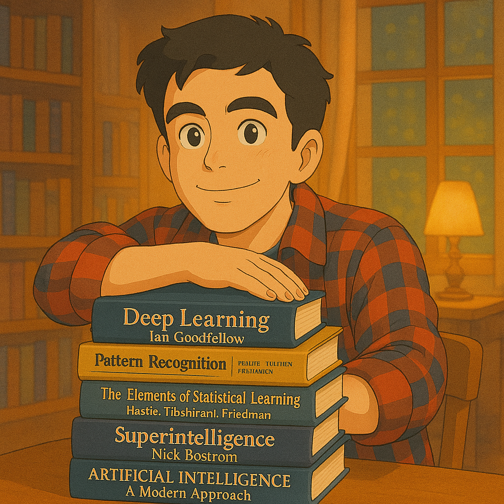

About Me

I’m a Software Engineer specializing in AI/ML, I currently work as an Artificial Intelligence Engineer at Emergent Mind, where I contribute to building an innovative platform that accelerates discovery and understanding of cutting-edge computer science research. I’m also a freelance content creator passionate about neurotech and exploring the intersection of AI and brain-machine interfaces.
I’m a product-driven engineer who thrives on building creative solutions that deliver real value for companies and individuals.
In my free time, I enjoy making music, contributing to open-source projects, learning Mandarin (你好), and traveling to new places—always curious and always learning.
Get in touch via X, Linkedin or omar@olivares.cl.